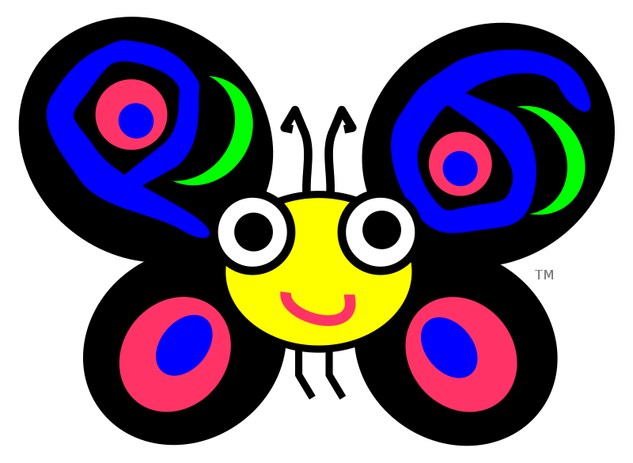
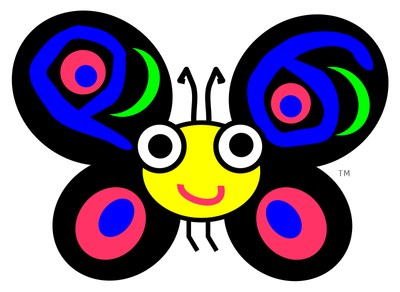
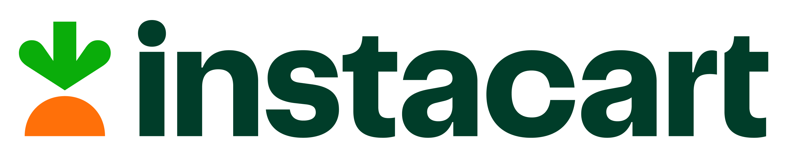
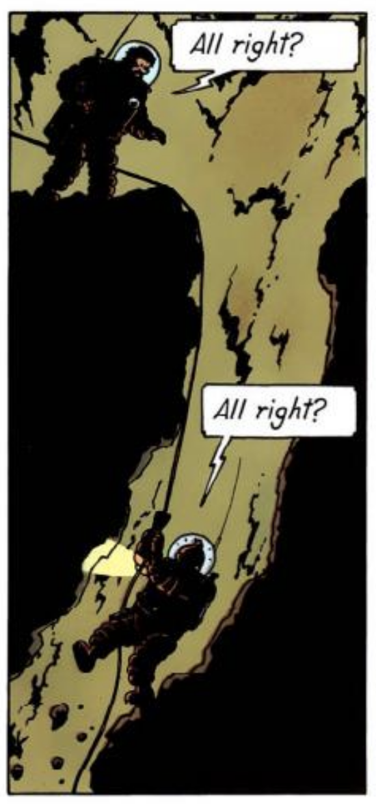
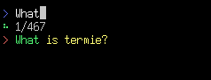
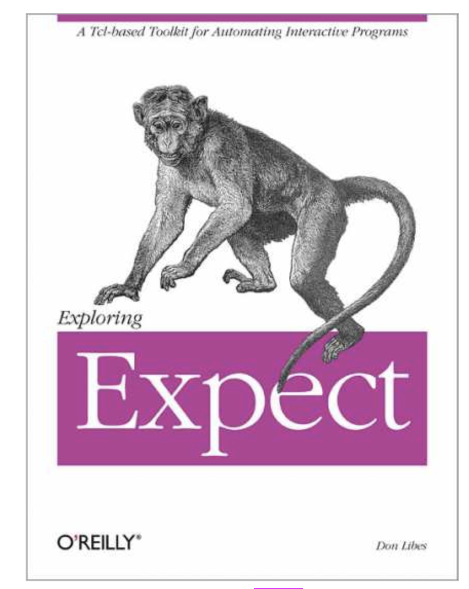

Termie
https://github.com/bduggan/termie
Practical and fun automation for all your terminal sessions
Brian Duggan
 bduggan
bduggan
FOSDEM 2023
 written in Raku
https://github.com/bduggan/termie
Brian Duggan
bduggan
 written in Raku
Thank you:

$ termie█
$
$ termie Welcome to termie v0.2.0 > █
$
$ termie Welcome to termie v0.2.0 > What is termie?█
$ What is termie? is: No such file or directory $
$ termie Welcome to termie v0.2.0 > What is termie? > █
$ What is termie? is: No such file or directory $
$ termie Welcome to termie v0.2.0 > What is termie? > pip install git+https://github.com/mmabrouk/chatgpt-wrapper█
Attempting uninstall: greenlet Found existing installation: greenlet 1.1.0 Uninstalling greenlet-1.1.0: Successfully uninstalled greenlet-1.1.0 ERROR: pip's dependency resolver does not currently take into account all the packages that are installed. This behaviour is the source of the following dependency conflicts. gevent 20.12.1 requires greenlet<2.0,>=0.4.17; platform_python_implementation == "CPython", but you have greenlet 2.0.1 which is incompatible. Successfully installed chatGPT-0.3.8 greenlet-2.0.1 playwright-1.30.0 pyee-9.0.4 WARNING: You are using pip version 21.1.1; however, version 22.3.1 is available. You should consider upgrading via the '/Users/bduggan/.pyenv/versions/3.8.10/bin/python3.8 -m pip install --upgrade pip' command. $
$ termie Welcome to termie v0.2.0 > What is termie? > pip install git+https://github.com/mmabrouk/chatgpt-wrapper > chatgpt█
gevent 20.12.1 requires greenlet<2.0,>=0.4.17; platform_python_implementation == "CPython", but you have greenlet 2.0.1 which is incompatible. Successfully installed chatGPT-0.3.8 greenlet-2.0.1 playwright-1.30.0 pyee-9.0.4 WARNING: You are using pip version 21.1.1; however, version 22.3.1 is available. You should consider upgrading via the '/Users/bduggan/.pyenv/versions/3.8.10/bin/python3.8 -m pip install --upgrade pip' command. $ chatgpt Provide a prompt for ChatGPT, or type !help or ? to list commands. 1> What is termie?
I'm sorry, I'm not familiar with that term. Can you please provide more context or information about what you are asking?
2>
$ termie Welcome to termie v0.2.0 > What is termie? > pip install git+https://github.com/mmabrouk/chatgpt-wrapper > chatgpt > What is termie? > █
WARNING: You are using pip version 21.1.1; however, version 22.3.1 is available. You should consider upgrading via the '/Users/bduggan/.pyenv/versions/3.8.10/bin/python3.8 -m pip install --upgrade pip' command. $ chatgpt Provide a prompt for ChatGPT, or type !help or ? to list commands. 1> What is termie?
I'm sorry, I'm not familiar with that term. Can you please provide more context or information about what you are asking?
2> I apologize for any confusion. I don't have knowledge of specific software named "termie" that is planned to be presented at FOSDEM 2023. FOSDEM is a free event for software developers to meet, share ideas and collaborate. There are many projects and software that will be presented there, I would recommend checking the schedule and list of talks for the conference for more information on which software will be presented.
$ termie Welcome to termie v0.2.0 > What is termie? > pip install git+https://github.com/mmabrouk/chatgpt-wrapper > chatgpt > What is termie? > Termie is being presented at FOSDEM 2023 > █
WARNING: You are using pip version 21.1.1; however, version 22.3.1 is available. You should consider upgrading via the '/Users/bduggan/.pyenv/versions/3.8.10/bin/python3.8 -m pip install --upgrade pip' command. $ chatgpt Provide a prompt for ChatGPT, or type !help or ? to list commands. 1> What is termie?
I'm sorry, I'm not familiar with that term. Can you please provide more context or information about what you are asking?
2> I apologize for any confusion. I don't have knowledge of specific software named "termie" that is planned to be presented at FOSDEM 2023. FOSDEM is a free event for software developers to meet, share ideas and collaborate. There are many projects and software that will be presented there, I would recommend checking the schedule and list of talks for the conference for more information on which software will be presented.
$ termie Welcome to termie v0.2.0 > What is termie? > pip install git+https://github.com/mmabrouk/chatgpt-wrapper > chatgpt > What is termie? > Termie is being presented at FOSDEM 2023 > \stop█
File "/Users/bduggan/.pyenv/versions/3.8.10/lib/python3.8/site-packages/playwright/_impl/_connection.py", line 249, in run await self._transport.run() File "/Users/bduggan/.pyenv/versions/3.8.10/lib/python3.8/site-packages/playwright/_impl/_transport.py", line 154, in run obj = self.deserialize_message(buffer) File "/Users/bduggan/.pyenv/versions/3.8.10/lib/python3.8/site-packages/playwright/_impl/_transport.py", line 84, in deserialize_message obj = json.loads(data) File "/Users/bduggan/.pyenv/versions/3.8.10/lib/python3.8/json/__init__.py", line 343, in loads s = s.decode(detect_encoding(s), 'surrogatepass') File "/Users/bduggan/.pyenv/versions/3.8.10/lib/python3.8/json/__init__.py", line 246, in detect_encoding if bstartswith((codecs.BOM_UTF32_BE, codecs.BOM_UTF32_LE)): KeyboardInterrupt
$ termie Welcome to termie v0.2.0 > What is termie? > pip install git+https://github.com/mmabrouk/chatgpt-wrapper > chatgpt > What is termie? > Termie is being presented at FOSDEM 2023 > \stop > \stop█
Task was destroyed but it is pending! Traceback (most recent call last): File "/Users/bduggan/.pyenv/versions/3.8.10/lib/python3.8/asyncio/base_subprocess.py", line 104, in close File "/Users/bduggan/.pyenv/versions/3.8.10/lib/python3.8/asyncio/unix_events.py", line 735, in close File "/Users/bduggan/.pyenv/versions/3.8.10/lib/python3.8/asyncio/unix_events.py", line 721, in write_eof File "/Users/bduggan/.pyenv/versions/3.8.10/lib/python3.8/asyncio/base_events.py", line 719, in call_soon File "/Users/bduggan/.pyenv/versions/3.8.10/lib/python3.8/asyncio/base_events.py", line 508, in checkclosed RuntimeError: Event loop is closed sys:1: RuntimeWarning: coroutine 'BrowserContext.close' was never awaited $
$ termie Welcome to termie v0.2.0 > What is termie? > pip install git+https://github.com/mmabrouk/chatgpt-wrapper > chatgpt > What is termie? > Termie is being presented at FOSDEM 2023 > \stop > \stop > █

\help
to
see
all
the
commands: > \help
\alias <key> [<n> | <str>] show alias key, or set it to a str or history item
\aliases <str> show aliases [containing a string]
\append <n> <file> append nth shown item to script <file>
\await [regex] await the appearance of regex in the output, then stop a repeat
\capture <file> write to <file>
... 43 commands currently ...
\split split current pane
\stop send ^C to the current pane stop <id> ...
\timing [on|off] turn on or off showing times in the prompt
\trace set log level to trace
\uni <text> Look up unicode character to output
\unwatch stop watching the current window+pane
\watch [filename] start watching the current window+pane by piping to a file
\xfer [filename] send a file or directory to the remote console
(reverse-i-search)`Wha': What is termie?
> \last 1 1) What is termie?
> \find What 
$ psql psql (14.3) Type "help" for help.
user@db=# select pid, now() - query_start as duration, query, state user@db-# from pg_stat_activity user@db-# where now() - query_start > interval '1 minute' user@db-# order by 2 desc; pid | duration | query | state ------+-----------------+----------------------+------- 81486 | 00:32:44.290828 | select pg_sleep(10); | idle (1 row) user@db-#
Welcome to termie v0.2.0 > psql > select pid, now() - query_start as duration, query, state > from pg_stat_activity > where now() - query_start > interval '1 minute' > order by 2 desc; >
> \edit find-queries.sql
select pid, now() - query_start as duration, query, state
from pg_stat_activity
where now() - query_start > interval '1 minute'
order by 2 desc;
> \alias find-queries \run find-queries.sql
\edit
--
edit
a
script \run
--
run
a
script \alias
--
make
a
macro $ psql psql (14.3) Type "help" for help.
user@db=# select pid, now() - query_start as duration, query, state user@db-# from pg_stat_activity user@db-# where now() - query_start > interval '1 minute' user@db-# order by 2 desc; pid | duration | query | state ------+-----------------+----------------------+------- 81486 | 00:32:44.290828 | select pg_sleep(10); | idle (1 row) user@db-#
Welcome to termie v0.2.0 > psql > \find-queries

Let's
#!/usr/bin/env expect
spawn docker run -it ubuntu:20.04 bash
expect "root@"
send "useradd termie\n"
expect -re "root@(.*):"
set host $expect_out(1,string)
send "passwd termie\n"
expect "New password:"
send "fosd3m\n"
expect "Retype new password:"
send "fosd3m\n"
expect "password updated successfully"
send "exit\n"
puts "host name is $host"
#/usr/bin/env termie
docker run -it ubuntu:20.04 bash
\expect root@
useradd termie
\expect / 'root@' $<host> = <-[:]>+ ':' /
passwd termie
\expect New password:
fosd3m
\expect Retype new password:
fosd3m
\expect password updated successfully
exit
echo "the hostname was" \=host
\expect
waits
for
a
string
before
continuing \=variable \expect
commands
are
treated
as
tests. $ docker run -it ubuntu:20.04 bash Unable to find image 'ubuntu:20.04' locally 20.04: Pulling from library/ubuntu 846c0b181fff: Pull complete Digest: sha256:0e0402cd13f68137edb0266e1d2c682f217814420f2d43d300ed8f65479b14fb Status: Downloaded newer image for ubuntu:20.04 root@945209a7bcba:/# useradd termie root@945209a7bcba:/# passwd termie New password: Retype new password: passwd: password updated successfully root@945209a7bcba:/# exit exit
$ ./docker.termie ok 1 - waited for root@ ok 2 - waited for New password: ok 3 - waited for Retype new password: ok 4 - waited for password updated successfully 1..4

Proc::Async
,
run
,
qx
,
shell my $tmux = Proc::Async.new: :w, <tmux -C>; # tmux control mode
my $proc = run <<fzf -q "$what">>, :in, :out; # fuzzy find
my ($rows,$cols) = qx{stty size}.split(' '); # get terminal size
use Readline; # GNU Readline library
whenever
,
watch sub tail($file --> Supply) {
supply {
whenever $file.watch -> $e {
emit $file.read.decode;
}
}
}
# supply of lines
whenever tail($file).lines -> $line {
emit $line
}
start
,
react # start a thread that watches for a string or regex, send captures on a channel
sub expect($target, Channel $captured, Supply :$from --> Promise) {
start {
react whenever $from -> $buffer {
given $target {
when Str {
if $buffer.contains($target) {
done;
}
}
when Regex {
if $buffer ~~ $target {
$captured.send: $/.clone
done;
}
}
}
}
}
}
The end